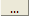

Check-Box (CHK)
Check-Box (CHK)
Um elemento do tipo Checkbox, assim como todos elementos que representam campos de formulário, é representado por um texto e o campo propriamente dito. O uso de elementos desse tipo é recomendado quando se quer oferecer ao usuário apenas duas opções onde geralmente uma é a negação ou o inverso da outra, exemplo: verdadeiro ou falso, habilitado ou desabilitado, sim ou não, etc.
Vale lembrar que além das propriedades listadas abaixo há as propriedades relacionadas ao texto do elemento. Para saber sobre elas clique aqui.
O campo Valor indica o valor representado por esse elemento. Se o valor aqui especificado corresponder ao valor definido em Valor Verd. o check-box virá marcado.
O campo Só leitura indica se esse campo de formulário será apenas de leitura.
O campo Desabilitado indica se esse campo de formulário ficará desabilitado.
O campo Obrigatório indica se esse campo de formulário é de preenchimento obrigatório.
O campo Valor Verd. indica qual o valor a ser considerado como verdadeiro, ou seja, caso o valor especificado na propriedade Valor seja igual ao valor definido aqui o check-box virá marcado.
O campo Valor Falso indica qual o valor a ser considerado como falso, ou seja, caso o valor especificado na propriedade Valor seja igual ao valor definido aqui o check-box virá desmarcado.
O campo Classe indica o nome da classe CSS que será usada para aplicar um estilo visual ao link. A classe CSS deve estar especificada no arquivo que serviu como modelo para a página ou deve estar em um arquivo CSS a ser incluído na página. Para incluir um arquivo CSS numa página gerada pelo WIzard selecione na combo-box o elemento <HEAD> e na propriedade Link CSS indique o caminho relativo ao servidor web do arquivo CSS desejado. Clicando em  serão listadas as classes CSS que estão definidas nos arquivos CSS que foram definidos para essa página.
O campo Estilo CSS indica o estilo visual que será aplicado ao campo do elemento. Aqui o desenvolvedor especifica diretamente os código style-sheet a serem aplicados ao elemento, exemplo:
font: italic 12px Verdana, Geneva, Arial, Helvetica, sans-serif; background: blue;